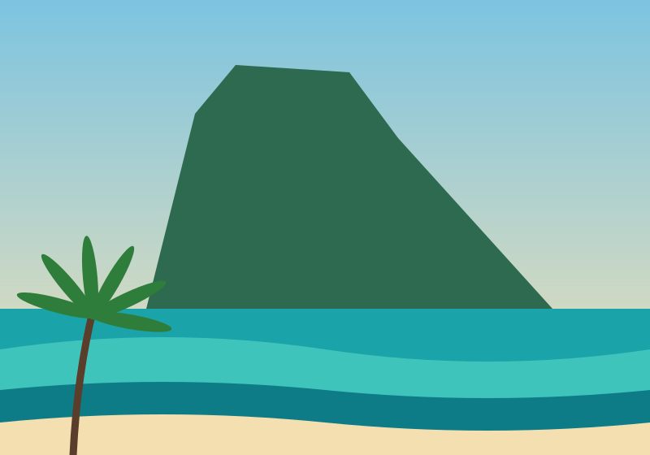
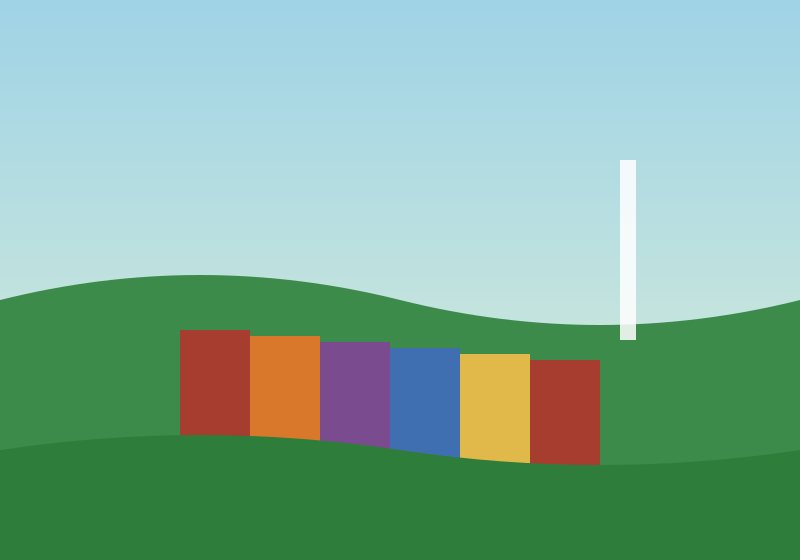
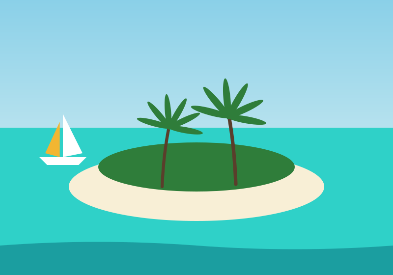
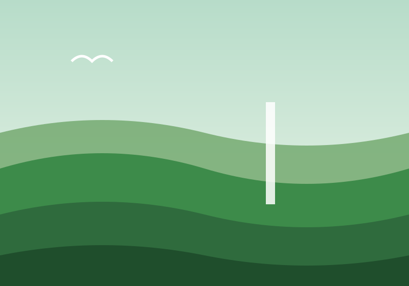
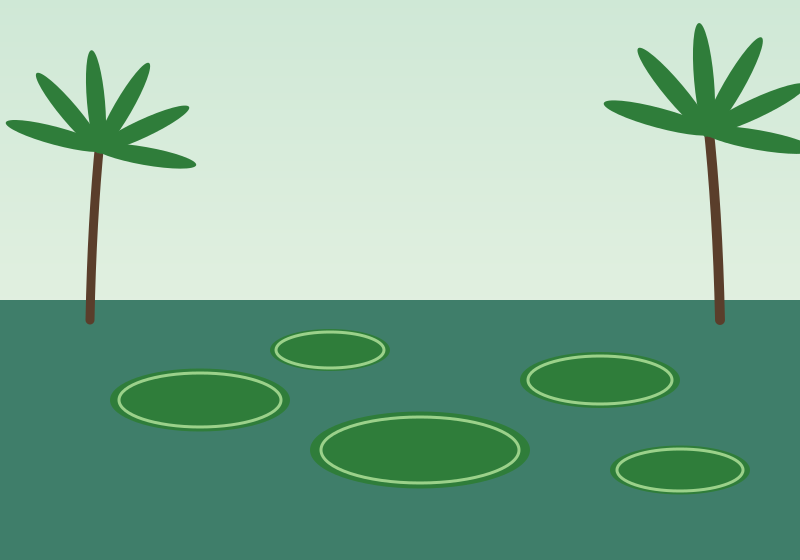
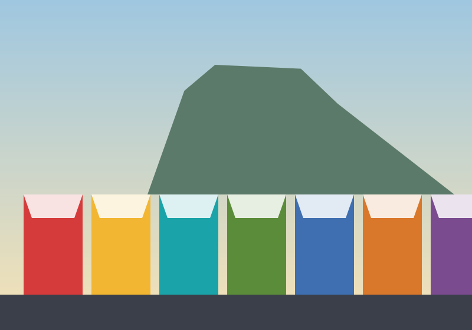
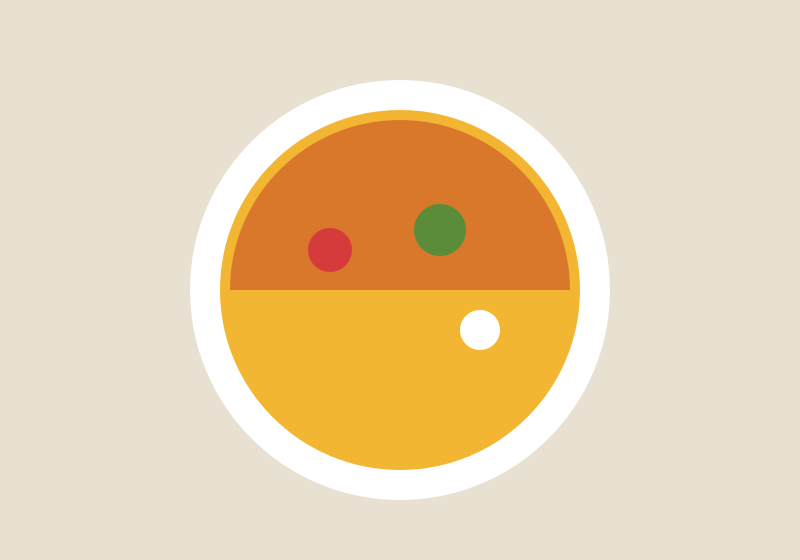
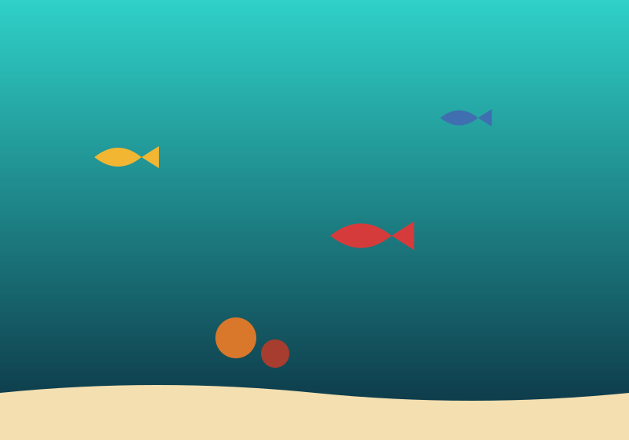
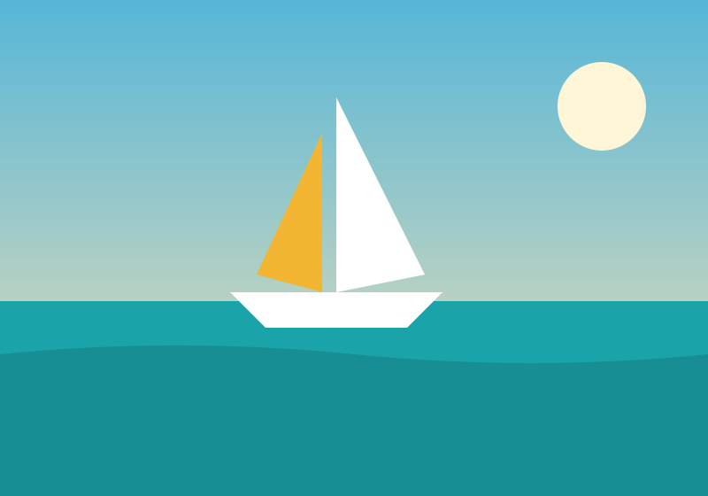
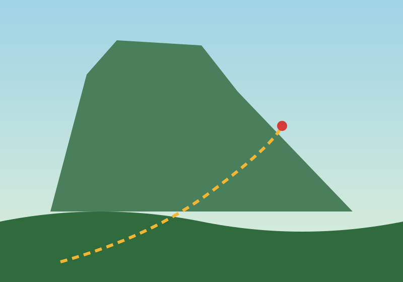

Southwest
Le Morne Brabant
Le Morne Cultural Landscape is a UNESCO World Heritage Site (2008) and a symbol of resistance by escaped enslaved people who hid on the mountain.
Attractions, culture, food and things to do.
Filter by what you enjoy, then open a card for details.

Le Morne Cultural Landscape is a UNESCO World Heritage Site (2008) and a symbol of resistance by escaped enslaved people who hid on the mountain.

Sand dunes in several colours sit near the Chamarel waterfall, one of the island's tallest.

A small island in the Trou d'Eau Douce lagoon, reached by boat.

Mauritius's largest national park protects native forest and rare birds.

One of the oldest botanical gardens in the Southern Hemisphere, famous for its giant water lilies and many palm species..

The capital has a busy Central Market and the Caudan Waterfront.
Different communities live here side by side, and you can taste and hear it.
Try dholl puri (thin flatbread with split-pea filling, curry and chutney), gateau piment (chilli and lentil fritters), rougaille (a Creole tomato stew), biryani, and alouda, a cold milk and basil-seed drink.

Sega is the island's traditional music and dance, with roots in the history of enslaved Africans. It is performed with drums and swaying movements, often at beach parties and hotel evenings.
Maha Shivaratri (February or March) sends thousands of pilgrims on foot to Grand Bassin. Other major events include Cavadee, Diwali, Eid and the Chinese Spring Festival. Dates move each year, so check a current calendar.
English is the official language, French is widely used in media and business, and Kreol Morisien is the language most people speak at home. A simple "bonzour" goes a long way.

Swim over coral in a marine park near Mahébourg. Go early for clearer water.

Sail the north or west coast with swim stops and a barbecue lunch on board.

Choose Le Morne or the Gorges. Start early, carry water and use a local guide on steeper routes.
May to December is cooler and drier. Cyclone season runs roughly from November to April, with the highest risk from January to March.
The currency is the Mauritian rupee (MUR). English and French are widely understood.
Traffic drives on the left. Buses are cheap, taxis can be negotiated, and many visitors rent a car or hire a driver for day trips.
Rules depend on your nationality and can change, so check the official tourism and immigration websites before booking.
Official resources: Mauritius Tourism Promotion Authority and UNESCO World Heritage in Mauritius.